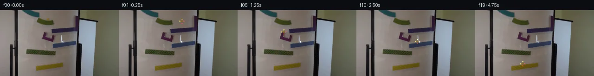

![首帧]()

Round 00
2026-11-05T10:26:10.027352+00:00像素候选变化代码 +213/−0inspection 更新
pixels 3b4bbdcce35b7034 · code 2a69d37c30e37492
查看本轮 generate.py 真实 diff
--- previous/generate.py
+++ current/generate.py
@@ -0,0 +1,213 @@
+"""Deterministic local pixel continuation of the supplied marble-run photograph."""
+from pathlib import Path
+import json
+import math
+
+import numpy as np
+from PIL import Image, ImageDraw, ImageFilter
+
+import artifact_io
+
+ROOT = Path(__file__).resolve().parent
+SOURCE = np.asarray(Image.open(ROOT / 'first_frame.png').convert('RGB'))
+W, H = 256, 144
+
+
+def restore_board():
+ """Small row-interpolated repair of the original marble, preserving the ramp."""
+ clean = SOURCE.astype(np.float64).copy()
+ for y in range(16, 23):
+ left = SOURCE[y, 97:100].astype(float).mean(axis=0)
+ right = SOURCE[y, 108:111].astype(float).mean(axis=0)
+ for x in range(99, 108):
+ q = math.sqrt(((x - 103.0) / 4.6) ** 2 + ((y - 19.3) / 3.65) ** 2)
+ weight = np.clip((1.18 - q) / .28, 0, 1)
+ replacement = left * (1 - (x - 98) / 11) + right * ((x - 98) / 11)
+ clean[y, x] = clean[y, x] * (1 - weight) + replacement * weight
+ return np.clip(np.rint(clean), 0, 255).astype(np.uint8)
+
+
+# Analytic contact times; all x/y positions refer to the center of the marble.
+GREEN_EXIT = .10
+PURPLE_STOP = .402
+PURPLE_EXIT = PURPLE_STOP + (-60 + math.sqrt(60**2 + 40 * 46.7)) / 20
+CRADLE_SIDE = PURPLE_EXIT + .17
+CRADLE_BASE = CRADLE_SIDE + .10
+CRADLE_X = 111 - 76 * .17 + 36 * .10
+CRADLE_Y = 38.8 + 6.08 * .17 + 350 * .17**2 + 60 * .10 + 350 * .10**2
+
+# Intersection of the cradle's ballistic rebound with the blue upper surface.
+blue_c = 70.8 - .13 * (CRADLE_X - 115) - CRADLE_Y
+blue_b = -120 + .13 * 105
+blue_dt = (-blue_b + math.sqrt(blue_b**2 + 4 * 425 * blue_c)) / (2 * 425)
+BLUE_LAND = CRADLE_BASE + blue_dt
+BLUE_X = CRADLE_X + 105 * blue_dt
+blue_slide_dt = (24 + math.sqrt(24**2 + 160 * (BLUE_X - 114.5))) / 80
+BLUE_EXIT = BLUE_LAND + blue_slide_dt
+BLUE_Y = 70.8 - .13 * (114.5 - 115)
+
+# Blue exit falls onto the green surface, with a damped tangential impact.
+green_c = 79.32 + .06 * 114.5 - BLUE_Y
+green_dt = (-11 + math.sqrt(11**2 + 1400 * green_c)) / 700
+LOWER_GREEN_LAND = BLUE_EXIT + green_dt
+LOWER_GREEN_X = 114.5 - 50 * green_dt
+green_slide_dt = math.sqrt((119.5 - LOWER_GREEN_X) / 23)
+LOWER_GREEN_EXIT = LOWER_GREEN_LAND + green_slide_dt
+LOWER_GREEN_Y = 79.32 + .06 * 119.5
+GREEN_VX = 46 * green_slide_dt
+
+# Last airborne drop intersects the yellow ramp.
+yellow_c = 131.72 - .14 * 119.5 - LOWER_GREEN_Y
+yellow_b = 2.2 + .14 * GREEN_VX
+yellow_dt = (-yellow_b + math.sqrt(yellow_b**2 + 1800 * yellow_c)) / 900
+YELLOW_LAND = LOWER_GREEN_EXIT + yellow_dt
+YELLOW_X = 119.5 + GREEN_VX * yellow_dt
+
+
+def motion(t):
+ if t <= GREEN_EXIT:
+ d = t / GREEN_EXIT
+ return 103 + 11 * d, 19.5 + .3 * d, 'upper green'
+ if t < .391:
+ d = t - GREEN_EXIT
+ return 114 + 145 * d, 19.8 + 5 * d + 165 * d*d, 'first drop'
+ if t < PURPLE_STOP:
+ x = 156.2 + 145 * (t - .391)
+ return x, 38.8 - .08 * (x - 111), 'purple stop approach'
+ if t < PURPLE_EXIT:
+ d = t - PURPLE_STOP
+ x = 157.7 - 60 * d - 10 * d*d
+ return x, 38.8 - .08 * (x - 111), 'purple slide left'
+ if t < CRADLE_SIDE:
+ d = t - PURPLE_EXIT
+ return 111 - 76*d, 38.8 + 6.08*d + 350*d*d, 'drop to cradle'
+ if t < CRADLE_BASE:
+ d = t - CRADLE_SIDE
+ x0 = 111 - 76*.17
+ y0 = 38.8 + 6.08*.17 + 350*.17**2
… diff truncated; 126 more lines …